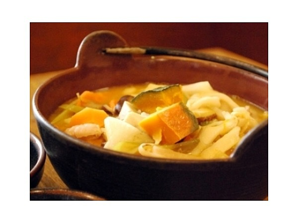
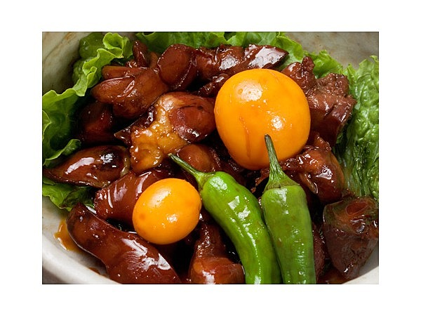
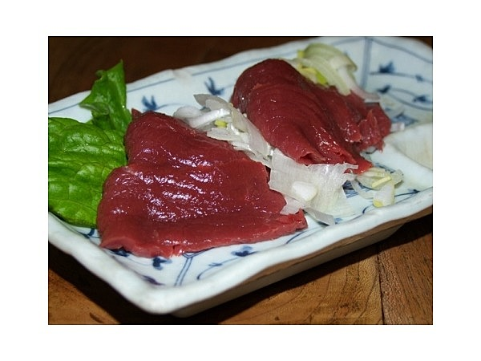

名物

‐ほうとう鍋‐
ほうとうとは平打ちうどんを幅広くしたものでかぼちゃやしいたけと一緒に
味噌をベースに煮込んだものです。
また栄養価が高く、戦国時代の陣中食として
武田信玄が自ら発案したものと言われています。(諸説あり)

‐甲府鳥もつ煮‐
鶏の砂肝、ハツ、レバー等を使った料理です。甘辛いしょうゆダレで味付けしており
食が進むこと間違いなしの一品です。

‐馬刺し‐
一般的に馬刺しといえば熊本県が生産量１位で熊本県産を食すことが多いと思います。
ですが、山梨県の馬刺しも負けていません！是非山梨県に行った暁には食べてみて下さい。
PAGE TOP